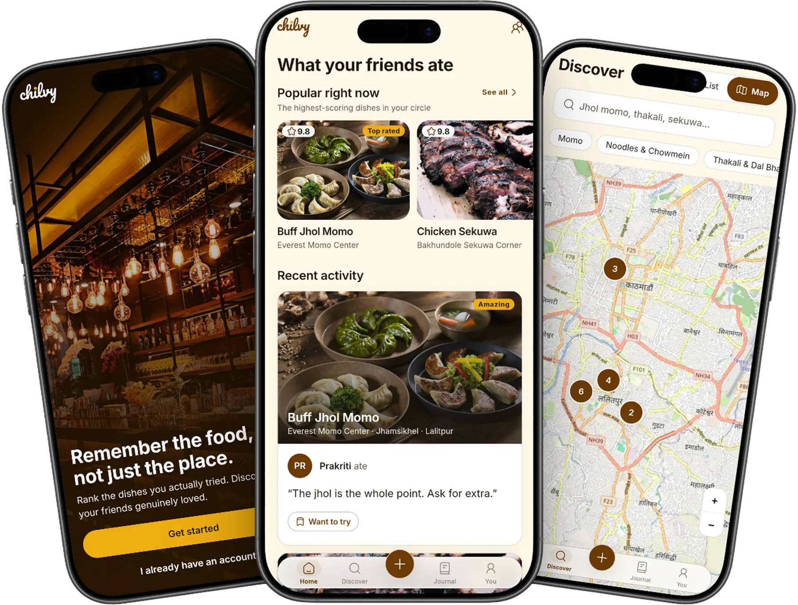
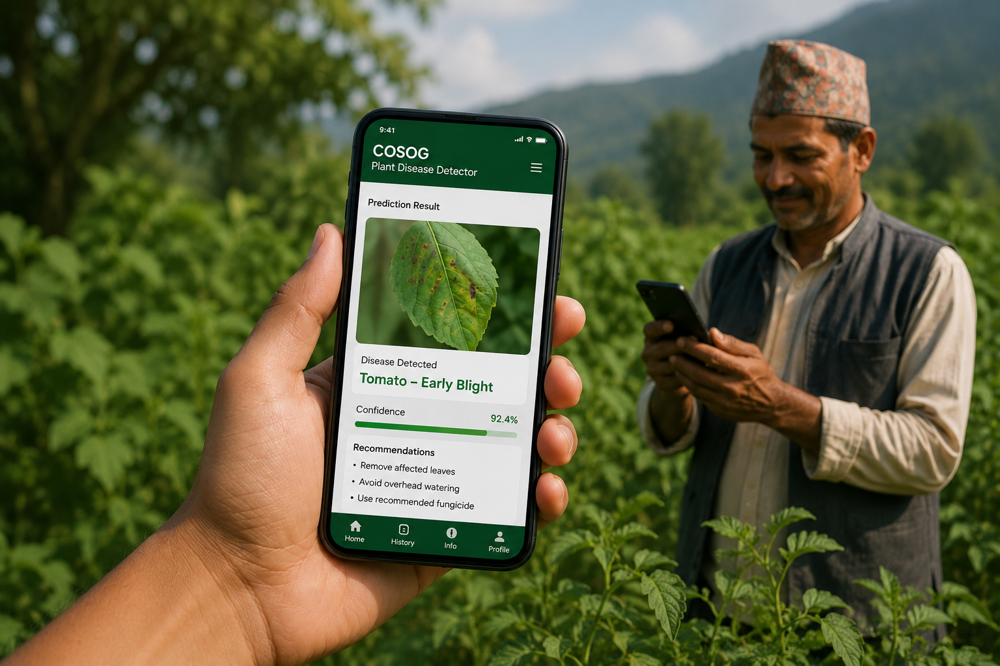
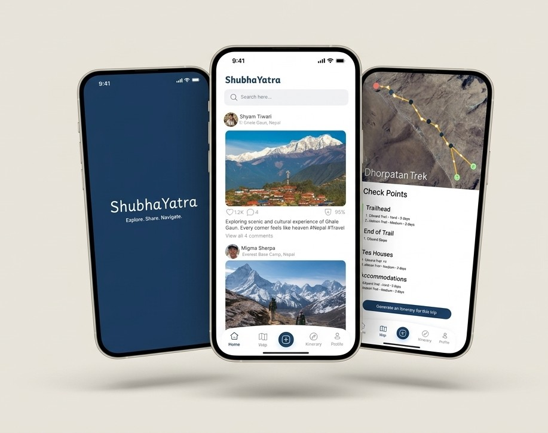

I build software, run the research behind it, and gather the people
around it. Mostly from Pokhara, Nepal.
Based in
Pokhara, Nepal
Currently
Co-founder & CTO, Chilvy
Hoping to read
Computer Science & Applied Mathematics
Most of what I have made started as a problem I kept noticing. A rating
system that cannot tell you which dish was good. A farmer with no fast way
to identify what is killing a crop. A patient who is only monitored while
somebody is standing in the room.
I work in three modes and they feed each other. I build — mobile and web
applications, machine learning systems, hardware prototypes. I research —
data, sensors, surveys, experiments across computer science and biomedical
systems. And I organise — teams, events and communities, because almost
nothing worth making is a one-person job.
I grew up in Pokhara, much of it around an NGO residential environment that
housed about 150 children. Being raised among people from that many
backgrounds is where I learned most of what I understand about community and
responsibility. I am a first-generation college student, and my route into
technology has been self-directed: reading, building, breaking things, and
finding people who knew more than I did.
What I have taken from it so far is that writing code cannot solve a problem
you have not properly understood yet.
01Selected work
Chilvy
A food-discovery app built around the dish, not the restaurant.

Welcome, the friends feed, and discovery by map.
You can love a restaurant's momo and have no use at all for its sandwich.
One star rating per restaurant flattens that into something nobody can act
on. Chilvy puts the dish at the centre: review it, save it, compare it
against what you have already rated, and keep a diary of what you actually
ate rather than where you happened to sit.
I co-founded the company, raised the seed funding, and built the app —
Flutter on iOS and Android, Riverpod and go_router over Supabase, after an
MVP on Firebase. The hard part was never the backend, though I rebuilt a
fair amount of it after hitting scaling problems. It was answering why a
person would open this twice.
COSOG
Plant disease detection from a photograph of a leaf.

Project imagecosog.png
A farmer who can see that something is wrong with a crop often cannot name
it quickly enough to act, and the delay is the expensive part. With a team
of six I built a detector in Python — convolutional neural networks and
ResNet, trained on Kaggle datasets — that identifies the disease from an
image of the leaf.
Remote biomedical monitoring
A sensor prototype that reports when nobody is in the room.
Project imageassets/biomedical.webp
On Arduino and Raspberry Pi I integrated six sensors and made their readings
legible remotely, from both web and mobile. We also explored having a model
summarise the resulting reports rather than leaving a clinician to read raw
series. Nearly all of the difficulty sat in the seam between hardware and
software, which is exactly where I learned the most.
Shubhayatra
A travel-technology concept, researched before it was designed.

Project imageassets/shubhayatra.webp
139 surveys and 34 interviews about how people actually plan and move
through travel in Nepal, before I drew a single screen. The prototype was
Figma; the real work was the research, the pitching, and the arithmetic on
revenue, operating cost and whether the thing could pay for itself.
The feedback that stuck with me was the distinction between an interesting
product and a business that survives. They are not the same object.
Hamro Subidha
More than seventy public schemes and services in one place, so that
finding out what you are entitled to does not depend on already knowing
who to ask.
AIDA
Accessibility technology for deaf and hard-of-hearing users. Most of
what gets called an accessibility gap is a design decision somebody made
early and never revisited, which makes it a problem I can do something
about.
02Experience
Lumino
Intern, roughly eight months
Worked in a technology team with exposure to blockchain and Web3 alongside web development.
Dr. Koirala Research Institute for Biotechnology and Biodiversity
Biomedical systems research intern
Built the six-sensor remote monitoring prototype described above.
Freelance
Approximately NPR 100,000 earned
Client work, taken end to end: understanding the requirement, delivering it, and keeping the person informed while I did.
03Community and leadership
I turned up to WordCamp Nepal 2025 as an attendee, having travelled about
200 km with six friends to get there. I have had a different job at it every
year since.
2025
Attendee
Travelled roughly 200 km with six friends, got pulled into the
WordPress community, and contributed more than 1,600 photographs to
the WordPress Photo Directory.
2026
Volunteer lead
Ran Hall 2 operations in Pokhara with a team of about 40 volunteers,
at an event with more than 800 participants.
—
Speaker, WordCamp Bharatpur
One of the youngest speakers on the programme.
2027
Communication team
Social content, promotional material, and sponsor and volunteer
communication for the event in Nepalgunj on 29–30 January 2027.
Interact District 3292
District President; previously Lakeside Club Vice President and District IT Head
Community service and organisational leadership across the district, working with students on initiatives and activities.
ICT Club
President, elected with 531 votes
Led student technology initiatives and ran activities aimed at getting more students to try building something.
CyberUtsav
Organising team, three seasons
Helped run an international high-school hackathon, creating somewhere for students to try technology and collaborative problem-solving.
04Toolkit
Languages
Python, C, Dart, JavaScript, HTML, CSS
Application development
Flutter, Riverpod, go_router, Firebase, Supabase, responsive web, backend development
Machine learning
Deep learning, convolutional neural networks, ResNet, data analysis, Kaggle
Quantum optimisation — where mathematics, algorithms and new computing hardware meet
05Education and recognition
SOS Hermann Gmeiner School Gandaki
Pokhara, Nepal — secondary education, science.
Computer science, physics, chemistry, mathematics, additional mathematics,
English and Nepali. My tuition was covered in full by a national merit
scholarship from the Government of Nepal, awarded through a competitive
national examination.
Outside the syllabus I worked through Harvard's CS50 and kept going: Scratch
and C, memory management and pointers, algorithms and Big O, recursion, hash
tables, SQL and relational databases, web fundamentals, and authentication
and application security. Most of it went straight into Chilvy, which is the
only reason any of it stuck.
I want to read computer science alongside applied mathematics.
06Away from the screen
I keep wicket and bat, across nine tournaments and two winning sides. Cricket
is where I learned that being individually good at something is not the same
as being useful to the side.
I have helped organise badminton tournaments at school, mostly to give more
people a reason to turn up and play. And I photograph things — more than
1,600 of my photographs are in the WordPress Photo Directory, free for anyone
to use.
If you are building something that matters, I would like to hear about it.